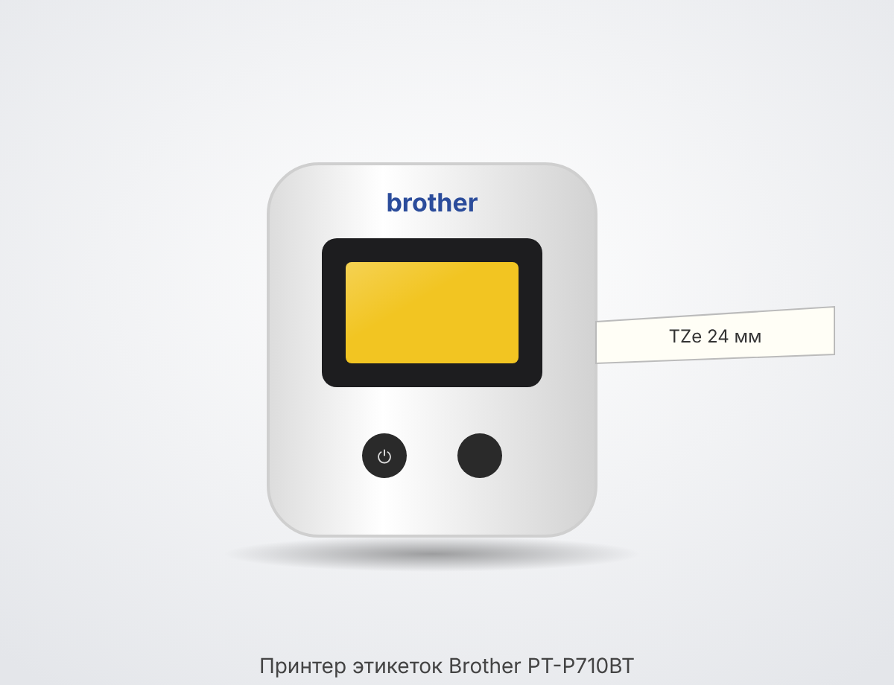
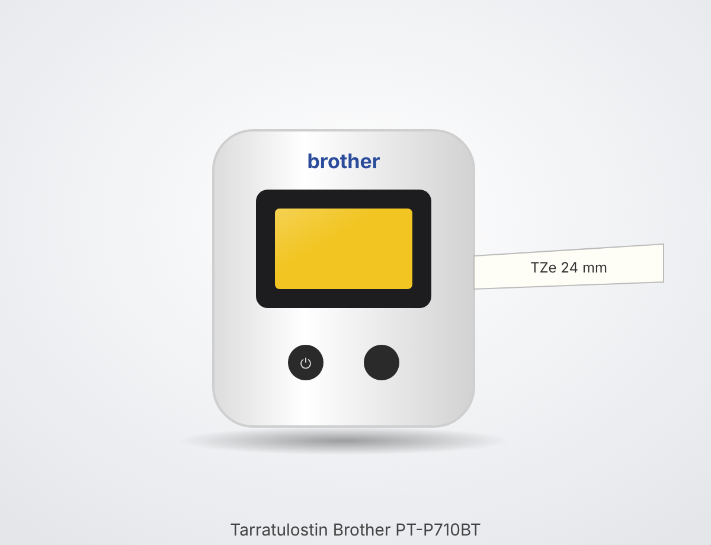

У принтера две кнопки: • ⏻ Питание — нажать и подержать, чтобы включить или выключить. • Подача и отрезка (Feed & Cut) — одно нажатие подаёт ленту и отрезает её. Удобно после замены кассеты. Сбоку разъём USB: через него идёт зарядка и подключение к компьютеру.
Встроенный литий-ионный аккумулятор заряжается по USB-кабелю от компьютера или USB-адаптера 5 В. Пока идёт зарядка, индикатор батареи горит оранжевым. Когда он гаснет, зарядка закончена. Если принтер долго лежит в ящике, раз в несколько месяцев его стоит подзарядить: так аккумулятор служит дольше.
1. Выключить принтер. 2. Открыть крышку отсека кассеты. 3. Вставить кассету TZe до щелчка. Конец ленты должен выходить к прорези, лента не должна перекручиваться. 4. Закрыть крышку до щелчка. 5. Включить принтер и нажать «Подача и отрезка», чтобы выровнять край. Подходят только ленты TZe шириной 3,5–24 мм. Для этикеток дома используется прозрачная TZe-151, 24 мм.
Нужно приложение Brother P-touch Design&Print 2 (iPhone и Android). 1. Включить Bluetooth на телефоне. 2. Включить принтер. 3. Выбрать принтер в настройках приложения. Пару «Bluetooth» в настройках телефона делать не нужно, приложение подключается само. 4. Картинку-этикетку открыть через «Изображение», подогнать по высоте ленты и напечатать. Важно: приложение подгоняет картинку под высоту печати 18 мм. Поэтому файлы этикеток делаются сразу в этой пропорции.
Подключить принтер USB-кабелем и установить P-touch Editor и драйвер с сайта Brother (support.brother.com → PT-P710BT → Загрузки).
• Зелёный горит: есть Bluetooth-связь, идёт подача, отрезка или печать. • Зелёный мигает каждые 0,5 с: принимает данные. • Зелёный 3 с горит, 1 с не горит: готов к работе. • Оранжевый горит: запуск. • Оранжевый мигает: остывает после долгой печати, подождать. • Красный горит или мигает: ошибка (см. ниже).
• Не горит: зарядка закончена (или работает от полного аккумулятора). • Оранжевый горит: идёт зарядка. • Оранжевый вспыхивает раз в 3 с: заряда примерно половина. • Оранжевый мигает дважды раз в 2 с: заряд низкий. • Оранжевый часто мигает: батарея почти разряжена или неисправна, поставить на зарядку.
• Нет кассеты, кассета вставлена неправильно или не подходит: вставить кассету TZe заново. • Ошибка ножа: коротко нажать кнопку питания. • Перегрев (мигает раз в секунду): подождать, пока индикатор станет зелёным, и повторить. • Ошибка связи: заново подключиться по Bluetooth и перезапустить принтер. С компьютера: переподключить USB-кабель или сменить порт. • Батарея (мигает дважды, пауза 1 с): зарядить. Если не помогает, аккумулятор неисправен. • Системная ошибка (часто мигает): выключить и включить. Если не помогает, сервис Brother.
• Лента не выходит или застряла: выключить принтер, вынуть кассету, аккуратно расправить ленту, обрезать смятый конец ножницами и вставить кассету заново. • Белые полосы на печати: протереть печатающую головку. • Чёрная красящая лента вылезла наружу вместе с наклейкой: такую кассету обычно уже не спасти. • Мелкий текст размыт: печатать картинку в полном размере, без масштабирования. • QR-код не читается: для QR-кодов лучше подходит ламинированная лента с чёрной печатью.
• Печатающая головка: выключить принтер, вынуть кассету и протереть головку сухой ватной палочкой. При сильном загрязнении слегка смочить палочку изопропиловым спиртом. • Корпус протирать сухой мягкой тканью, без растворителей. • Не оставлять на солнце и в холодной машине.
• Печать: термотрансферная, 180 точек на дюйм, только чёрная (цвет печати зависит от кассеты). • Высота печати: до 18 мм на ленте 24 мм. • Ленты: Brother TZe, 3,5 / 6 / 9 / 12 / 18 / 24 мм. • Нож: автоматический. • Питание: встроенный Li-ion аккумулятор, зарядка по USB 5 В 0,5 А. • Связь: Bluetooth и USB.
The printer has two buttons: • ⏻ Power — press and hold to switch on or off. • Feed & Cut — one press feeds the tape and cuts it. Handy after changing the cassette. On the side there is a USB port: it is used for charging and for connecting to a computer.
The built-in lithium-ion battery is charged with a USB cable from a computer or a 5 V USB adapter. While charging, the battery indicator lights orange. When it goes out, charging is complete. If the printer sits in the box for a long time, it is worth recharging it every few months: this makes the battery last longer.
1. Switch off the printer. 2. Open the cassette compartment cover. 3. Insert the TZe cassette until it clicks. The end of the tape must come out towards the slot, and the tape must not be twisted. 4. Close the cover until it clicks. 5. Switch on the printer and press “Feed & Cut” to trim the edge. Only TZe tapes 3.5–24 mm wide fit. For labels at home, clear TZe-151, 24 mm, is used.
You need the Brother P-touch Design&Print 2 app (iPhone and Android). 1. Turn on Bluetooth on the phone. 2. Switch on the printer. 3. Select the printer in the app settings. There is no need to pair it under “Bluetooth” in the phone settings — the app connects by itself. 4. Open the label image via “Image”, fit it to the tape height and print. Important: the app scales the image to a print height of 18 mm. That is why label files are made in this proportion from the start.
Connect the printer with a USB cable and install P-touch Editor and the driver from the Brother website (support.brother.com → PT-P710BT → Downloads).
• Green, steady: Bluetooth connected, feeding, cutting or printing in progress. • Green, flashing every 0.5 s: receiving data. • Green on for 3 s, off for 1 s: ready. • Orange, steady: starting up. • Orange, flashing: cooling down after a long print run, wait. • Red, steady or flashing: error (see below).
• Off: charging complete (or running on a full battery). • Orange, steady: charging. • Orange, flashes once every 3 s: about half charged. • Orange, flashes twice every 2 s: battery low. • Orange, flashing rapidly: battery almost empty or faulty, put it on charge.
• No cassette, cassette inserted incorrectly or not compatible: reinsert the TZe cassette. • Cutter error: briefly press the power button. • Overheating (flashes once a second): wait until the indicator turns green, then try again. • Connection error: reconnect via Bluetooth and restart the printer. From a computer: reconnect the USB cable or use a different port. • Battery (flashes twice, 1 s pause): charge it. If that does not help, the battery is faulty. • System error (flashing rapidly): switch off and on again. If that does not help, contact Brother service.
• Tape does not come out or is jammed: switch off the printer, take out the cassette, carefully straighten the tape, cut off the crumpled end with scissors and reinsert the cassette. • White streaks in the print: wipe the print head. • The black ink ribbon has come out together with the label: such a cassette usually cannot be saved. • Small text is blurry: print the image at full size, without scaling. • QR code will not scan: laminated tape with black print works better for QR codes.
• Print head: switch off the printer, take out the cassette and wipe the head with a dry cotton swab. If it is very dirty, slightly moisten the swab with isopropyl alcohol. • Wipe the case with a dry soft cloth, no solvents. • Do not leave it in the sun or in a cold car.
• Printing: thermal transfer, 180 dpi, black only (the print colour depends on the cassette). • Print height: up to 18 mm on 24 mm tape. • Tapes: Brother TZe, 3.5 / 6 / 9 / 12 / 18 / 24 mm. • Cutter: automatic. • Power: built-in Li-ion battery, charged via USB 5 V 0.5 A. • Connectivity: Bluetooth and USB.

Tulostimessa on kaksi painiketta: • ⏻ Virta — paina ja pidä pohjassa käynnistääksesi tai sammuttaaksesi. • Syöttö ja leikkaus (Feed & Cut) — yksi painallus syöttää nauhaa ja leikkaa sen. Kätevä kasetin vaihdon jälkeen. Sivussa on USB-liitäntä: sen kautta tulostin ladataan ja liitetään tietokoneeseen.
Sisäänrakennettu litiumioniakku ladataan USB-kaapelilla tietokoneesta tai 5 V:n USB-laturista. Latauksen aikana akun merkkivalo palaa oranssina. Kun se sammuu, lataus on valmis. Jos tulostin on pitkään laatikossa, se kannattaa ladata muutaman kuukauden välein: näin akku kestää pidempään.
1. Sammuta tulostin. 2. Avaa kasettilokeron kansi. 3. Aseta TZe-kasetti paikalleen, kunnes se napsahtaa. Nauhan pään on tultava aukkoa kohti, eikä nauha saa olla kierteellä. 4. Sulje kansi, kunnes se napsahtaa. 5. Käynnistä tulostin ja paina ”Syöttö ja leikkaus” tasoittaaksesi reunan. Vain 3,5–24 mm leveät TZe-nauhat sopivat. Kotona tarroihin käytetään läpinäkyvää TZe-151-nauhaa, 24 mm.
Tarvitaan Brother P-touch Design&Print 2 -sovellus (iPhone ja Android). 1. Kytke puhelimen Bluetooth päälle. 2. Käynnistä tulostin. 3. Valitse tulostin sovelluksen asetuksista. Laiteparia ei tarvitse muodostaa puhelimen Bluetooth-asetuksissa, sovellus yhdistää itse. 4. Avaa tarrakuva kohdasta ”Kuva”, sovita se nauhan korkeuteen ja tulosta. Tärkeää: sovellus sovittaa kuvan 18 mm:n tulostuskorkeuteen. Siksi tarratiedostot tehdään suoraan tähän mittasuhteeseen.
Liitä tulostin USB-kaapelilla ja asenna P-touch Editor ja ohjain Brotherin sivustolta (support.brother.com → PT-P710BT → Lataukset).
• Vihreä palaa: Bluetooth-yhteys on muodostettu, syöttö, leikkaus tai tulostus käynnissä. • Vihreä vilkkuu 0,5 s välein: vastaanottaa tietoja. • Vihreä palaa 3 s, sammuu 1 s: valmis käyttöön. • Oranssi palaa: käynnistyy. • Oranssi vilkkuu: jäähtyy pitkän tulostuksen jälkeen, odota. • Punainen palaa tai vilkkuu: virhe (katso alla).
• Ei pala: lataus on valmis (tai toimii täydellä akulla). • Oranssi palaa: lataus käynnissä. • Oranssi välähtää 3 s välein: akussa on noin puolet varausta. • Oranssi vilkkuu kahdesti 2 s välein: akun varaus on alhainen. • Oranssi vilkkuu tiheään: akku on lähes tyhjä tai viallinen, laita lataukseen.
• Ei kasettia, kasetti on asetettu väärin tai se ei sovi: aseta TZe-kasetti uudelleen. • Leikkurin virhe: paina lyhyesti virtapainiketta. • Ylikuumeneminen (vilkkuu kerran sekunnissa): odota, kunnes merkkivalo muuttuu vihreäksi, ja yritä uudelleen. • Yhteysvirhe: yhdistä uudelleen Bluetoothilla ja käynnistä tulostin uudelleen. Tietokoneelta: irrota ja kytke USB-kaapeli uudelleen tai vaihda porttia. • Akku (vilkkuu kahdesti, 1 s tauko): lataa. Jos se ei auta, akku on viallinen. • Järjestelmävirhe (vilkkuu tiheään): sammuta ja käynnistä uudelleen. Jos se ei auta, Brother-huolto.
• Nauha ei tule ulos tai on juuttunut: sammuta tulostin, ota kasetti pois, oikaise nauha varovasti, leikkaa rypistynyt pää saksilla ja aseta kasetti takaisin. • Valkoisia raitoja tulosteessa: pyyhi tulostuspää. • Musta värinauha on tullut ulos tarran mukana: tällaista kasettia ei yleensä voi enää pelastaa. • Pieni teksti on epäselvää: tulosta kuva täysikokoisena, ilman skaalausta. • QR-koodi ei lue: QR-koodeille sopii paremmin laminoitu nauha mustalla tulostuksella.
• Tulostuspää: sammuta tulostin, ota kasetti pois ja pyyhi pää kuivalla vanupuikolla. Jos pää on hyvin likainen, kostuta puikkoa hieman isopropyylialkoholilla. • Pyyhi runko kuivalla pehmeällä liinalla, ei liuottimia. • Älä jätä aurinkoon tai kylmään autoon.
• Tulostus: lämpösiirto, 180 dpi, vain musta (tulostusväri riippuu kasetista). • Tulostuskorkeus: enintään 18 mm 24 mm:n nauhalla. • Nauhat: Brother TZe, 3,5 / 6 / 9 / 12 / 18 / 24 mm. • Leikkuri: automaattinen. • Virta: sisäänrakennettu Li-ion-akku, lataus USB:n kautta 5 V 0,5 A. • Yhteydet: Bluetooth ja USB.